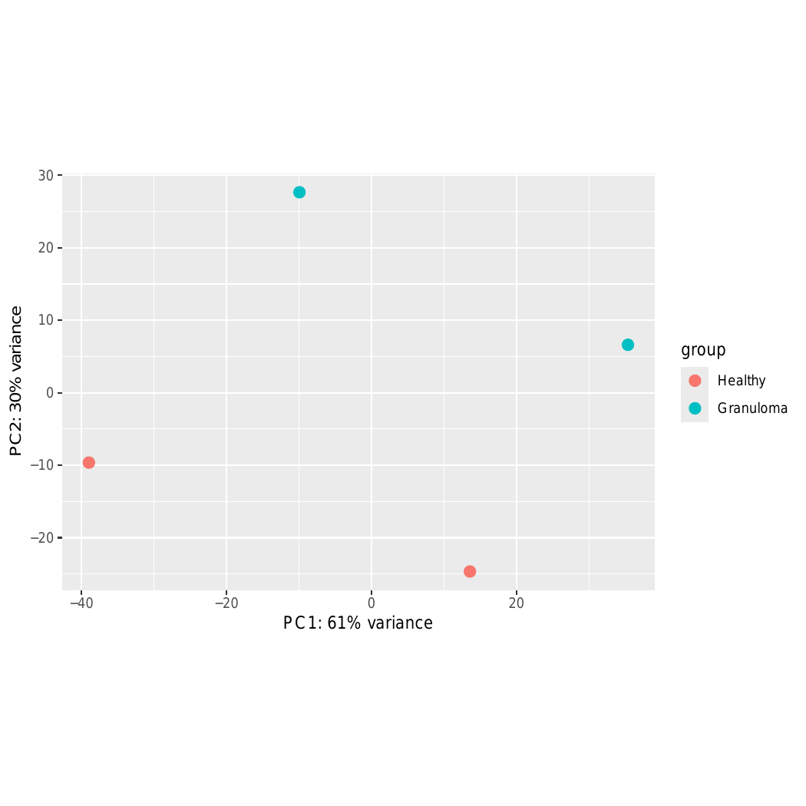
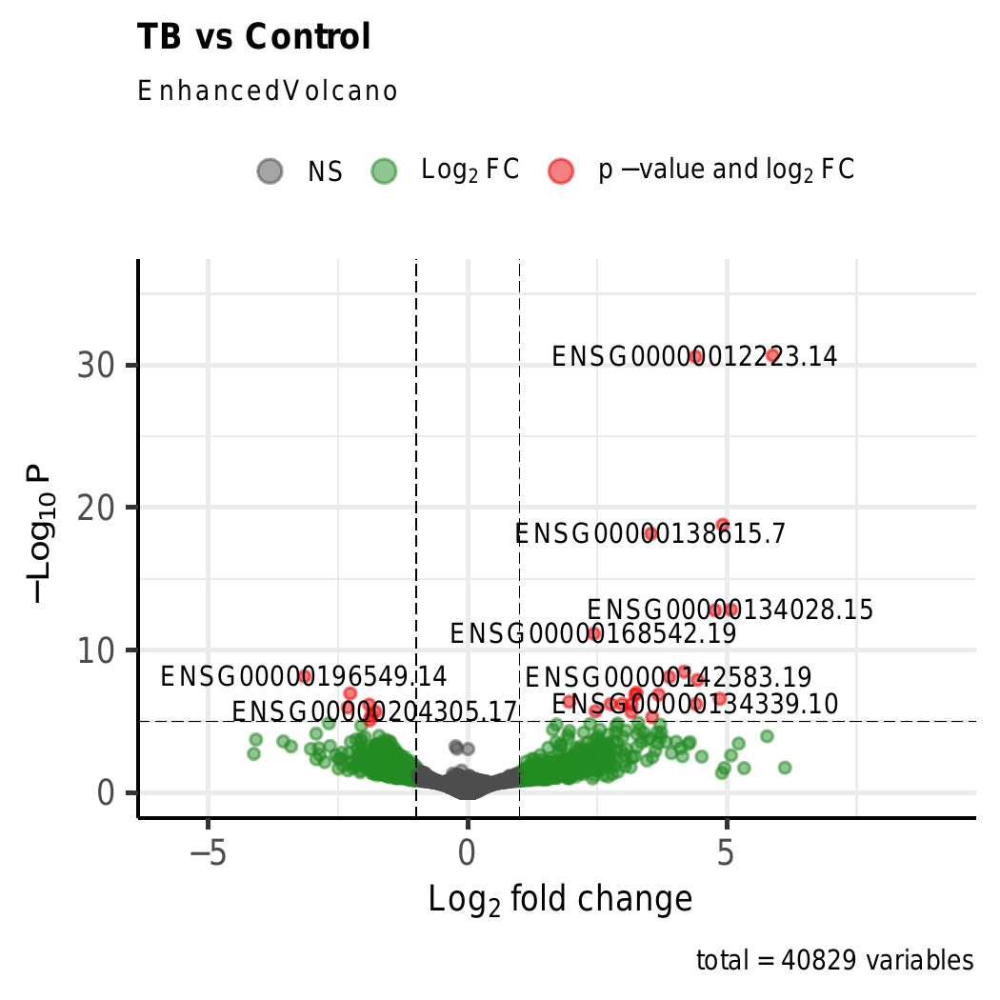
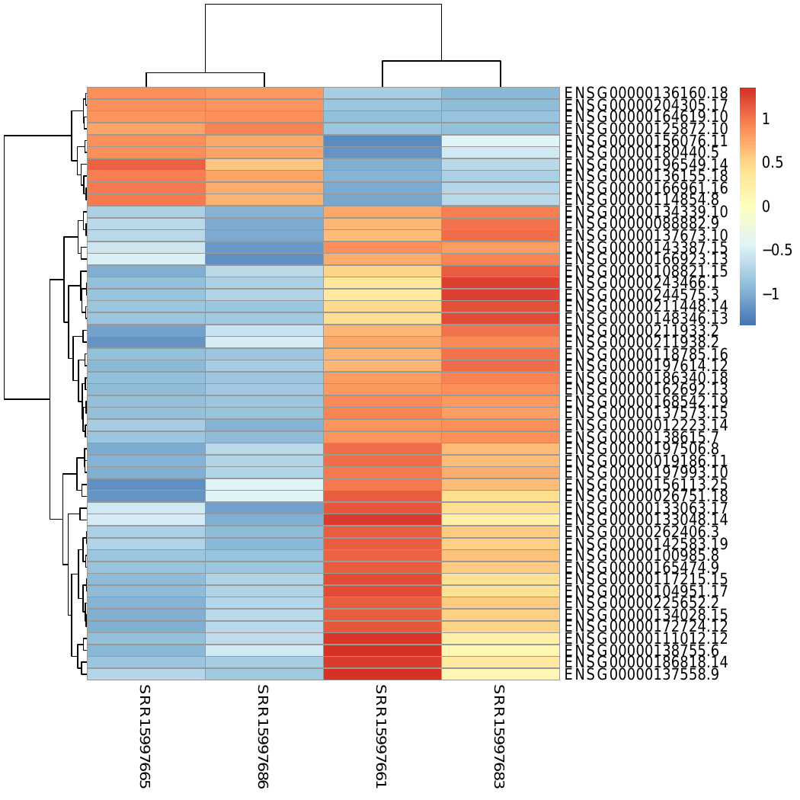
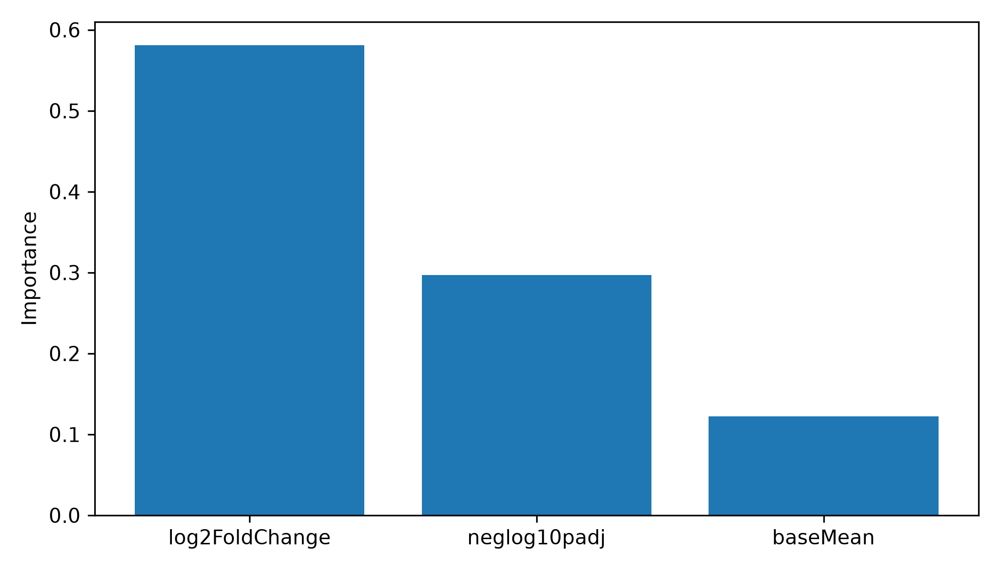

Project Overview
TargetRankAI is an end-to-end RNA-seq bioinformatics workflow that combines differential expression analysis, functional enrichment, and machine learning to prioritize candidate therapeutic targets associated with human tuberculosis.
RNA-seq Workflow

Key Results

PCA Analysis

Differential Expression Analysis

Heatmap of Top Differentially Expressed Genes

Machine Learning Feature Importance
Tools & Technologies
Linux • Bash • Python • R • HISAT2 • SAMtools • featureCounts • DESeq2 • FastQC • MultiQC • fastp • gProfiler2 • Random Forest • XGBoost • SVM • Logistic Regression
Citation
If you use TargetRankAI in your research, please cite this repository using the provided CITATION.cff file.